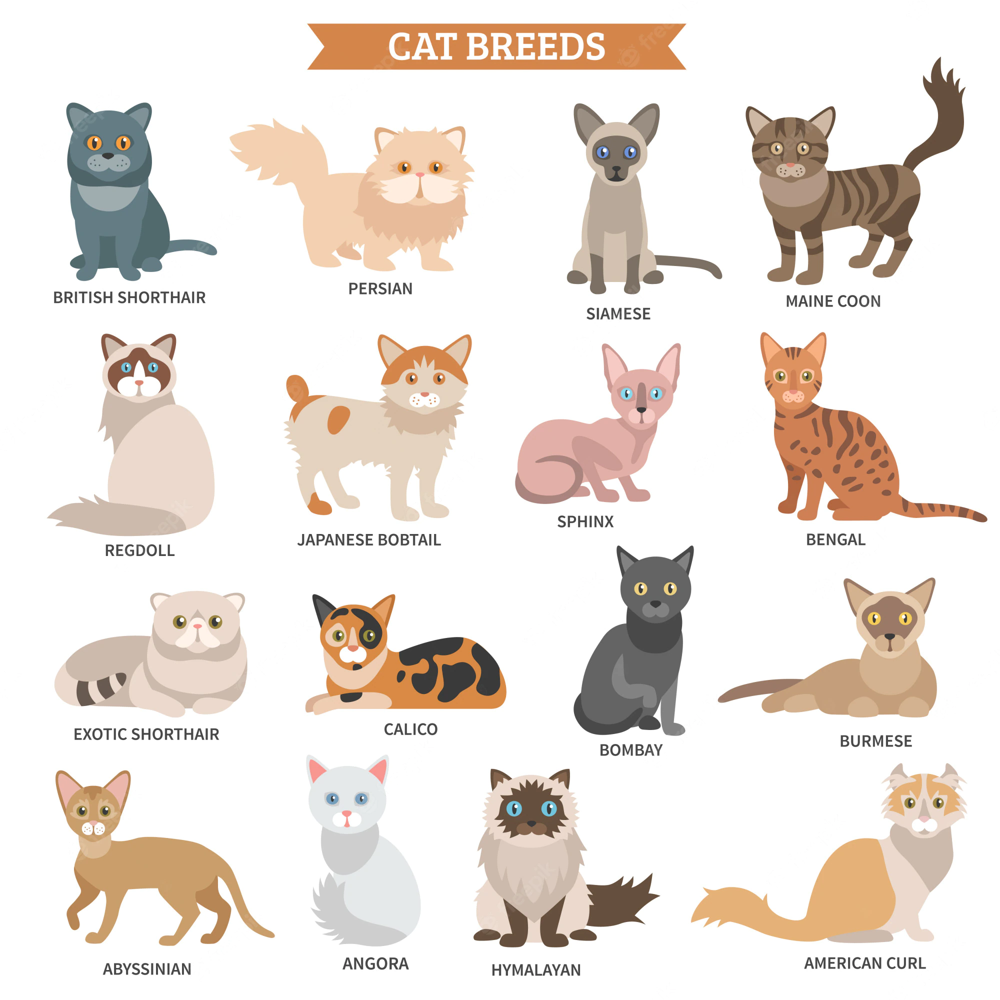

“Time spent with cats is never wasted.” – Sigmund Freud

The cat is a domestic species of small carnivorous mammal. It is the only domesticated species in the family Felidae and is commonly referred to as the domestic cat or house cat to distinguish it from the wild members of the family. Cats are commonly kept as house pets but can also be farm cats or feral cats; the feral cat ranges freely and avoids human contact. Domestic cats are valued by humans for companionship and their ability to kill rodents. About 60 cat breeds are recognized by various cat registries.
Types of cats
Catbreed
Traits
Abyssinian
Busy, active, purposeful and affectionate.
Bengal
Curious, energetic and athletic.
Ocicat
A strong, active and sociable cat.
Siamese
Determined, vocal, active, affectionate cats but they don’t like being left alone.
This is Beni, my tomcat. He passed away this january.
Facts about cats:
Cats are believed to be the only mammals who don't taste sweetness.
Cats are nearsighted, but their peripheral vision and night vision are much better than that of humans.
Cats can jump up to six times their length.
Who was Félicette?
Félicette was a stray Parisian cat who is the only cat to have been successfully launched into space. She was launched on 18 October 1963 as part of the French space program. Félicette was one of 14 female cats trained for spaceflight. The cats had electrodes implanted onto their skulls so their neurological activity could be monitored throughout the flight. Electrical impulses were applied to the brain and a leg during the flight to stimulate responses. The capsule was recovered 13 minutes after the rocket was ignited. Most of the data from the mission were of good quality, and Félicette survived the flight but was purposely killed two months later for the examination of her brain.